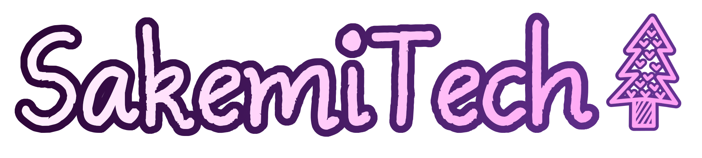

|
IMPORTANT NOTICE: If you downloaded my mod Baldi's Extended Schoolhouse, please be aware that it shipped with a security vulnerability that was discovered in all versions of Unity Engine from 2017-onwards. I will be working to fix this issue as soon as possible. It should also be noted that the vulnerability exists in vanilla Baldi's Basics Classic too, though mystman12 has already announced that he will fix the issue in all major releases of Baldi's Basics. You can read more about it here. |

(temporary logo)
SakemiTech is a computer software development team consisting of exactly one person (me, hehe). As of now, my publicly released works consist entirely of game mods.
Note that some older works have been released under the name "JuniDev".
i'll put a nice table here later, but for now we'll just have an unordered list of my works
- Baldi's Extended Schoolhouse
- Miku Monday (old and outdated mod)